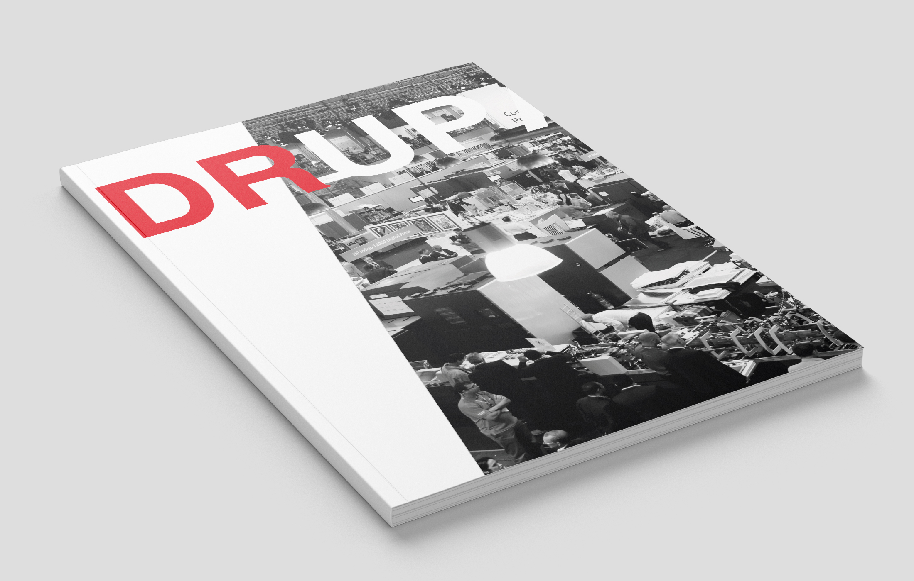
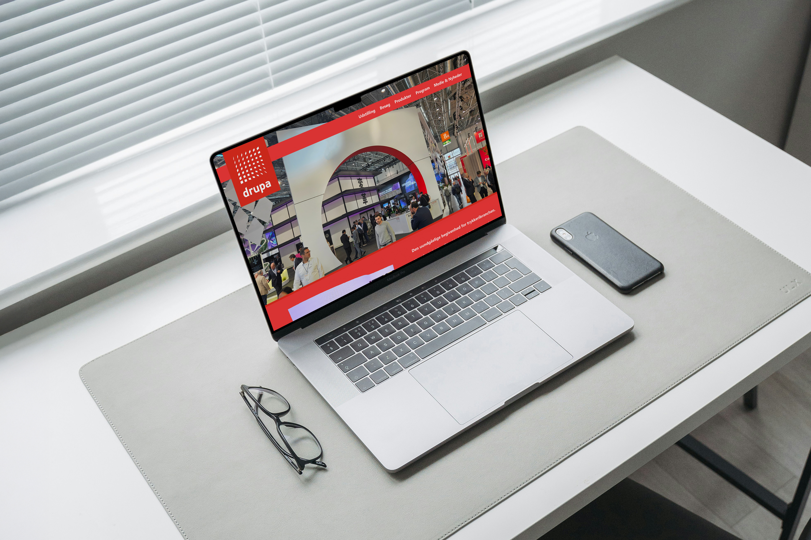
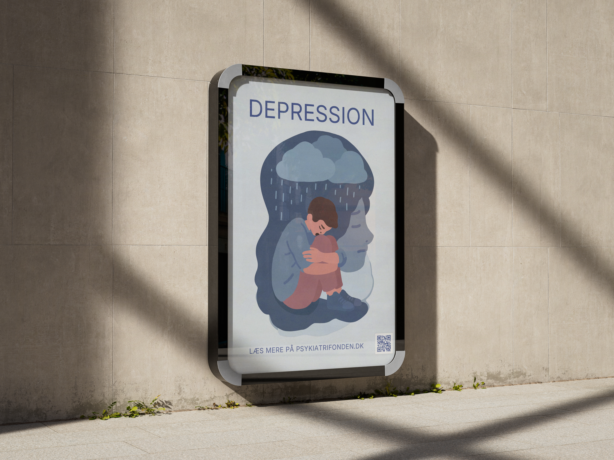

Fra konceptet til det trykte ark — jeg designer med forståelse for håndværk, format og det budskab, der skal landes.
Se projekter
Digitalt produkt — Hjemmeside
Drupa er verdens største fagmesse for trykkeri- og emballageindustrien, afholdt i Düsseldorf. Opgaven var at producere et redaktionelt magasin samt designe en landingsside der kommunikerer messens univers.
Magasinet er opsat i InDesign med 3 mm bleed, CMYK-workflow og Composite CMYK til print. Hjemmesiden er designet med fokus på nem navigation, billedeslider og simpel informationsarkitektur.
GreenMind arbejder for at gøre køb og salg af brugt elektronik nemt og trygt for danskerne. Opgaven var at designe en webshop med fokus på klar navigation, troværdighed og konvertering.
Siden er designet med tydelige farver, simpel menu og produktkategorier. Grafik og billeder er behandlet i Photoshop for ensartet kvalitet og visuel profil på tværs af alle produktsider.

Psykiatrifonden ønskede en kampagneplakat der nedbryder tabuer om depression med budskabet: "Det er okay ikke at være okay." Projektet inkluderer både trykt A1-plakat og en digital reklamevideo.
A1-plakat sat i InDesign med 3 mm bleed og Inter-typografi. Billeder behandlet i Photoshop. Reklamevideo produceret med grafisk design og billedebehandling til Arko Design.
Jeg designer med øje for detaljen — og forståelse for hvad der sker, når blikket rammer siden.
Jeg er 25 år og studerer til mediegrafiker med fokus på grafisk kommunikation, trykte medier og visuel identitet. For mig hænger det tekniske og det æstetiske uløseligt sammen.
Jeg arbejder metodisk — fra dokumentopsætning til færdigt tryk — og jeg forstår hvad der sker i mødet mellem skærm og papir.
Tilgængelig for praktik, freelance og projekter — fra konceptet til det færdige tryk.